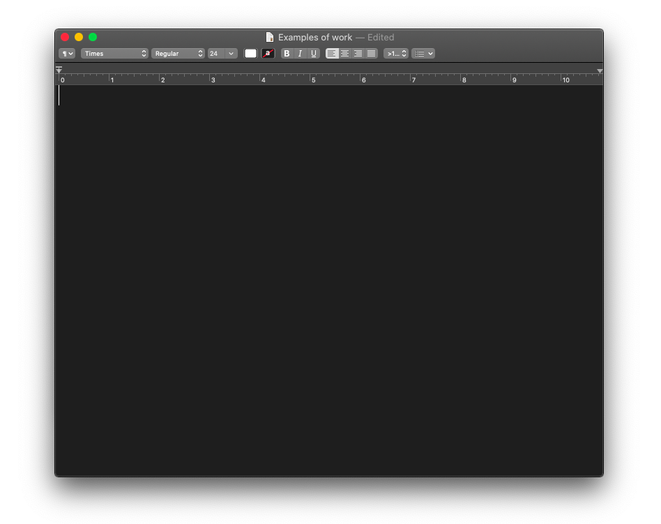

For eight years, I served as an editor for a leading online journal of criticism,
managing a remote team while working with a stable of freelance writers to
produce a monthly magazine and daily essays.
I copy edited manuscripts for publishers such as Verso Books and Grove Press,
and edited scholarly texts for publication with Duke University Press and Pluto
Press. For private clients, I have edited successful PhD dissertations and book
proposals.
I conceived and built the online presence for an Emmy-nominated PBS series
about poverty in America.
I fact-checked and edited copy for clients in the fashion and art worlds such as
V Magazine, Flash Art, and the Guggenheim Museum, as well as artists and
researchers such as Daniel Paul and Paolo Cirio.
I wrote copy for clients in the technology, biomedical and finance world like
Glycomine, Sequentum, Amazon Web Services, Samsung, and HSBC.
I translated a sci-fi memoir by the French theorist Guy Hocquenghem which
was a finalist for the 2020 Lambda Literary Award.